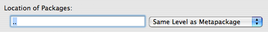
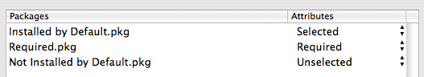

Specifying the Contents
The contents of a metapackage are made up of packages and other metapackages. You specify the contents in the “Contents” tab of the PackageMaker user interface. The contents can be located at one of three places:
- Inside Metapackage: The contents should be stored in the
Contents/Packagesdirectory of the metapackage bundle. - Same Level as Metapackage: The contents should be stored in the same directory as the metapackage itself.
- Custom: The contents should be stored at the directory you specify.
 Specifying the package location
No matter which of these locations you choose, you are responsible for moving the contents there, either before or after the metapackage is built.
You can add/remove packages/metapackages from the metapackage using the + and - buttons and can also add packages/metapackages via drag-n-drop. Content items can be assigned attributes, which will affect how they are displayed in Installer.app if the user customizes the install:
- Selected: The package is initially selected, but can be turned off by the user.
- Unselected: The package is initially deselected, but can be turned on by the user.
- Required: The package is initially selected and cannot be turned off by the user.
 Specifying the package attributes